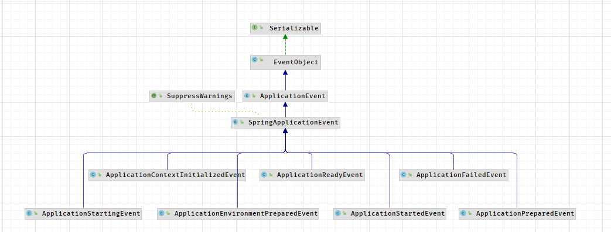

springboot 整合servlet
静态文件处理
springMVC扩展
thymeleaf
国际化
整合jdbc
整合druid
配置多数据源
spring集成mybatis
表单接收方式
源码解析
springboot 优点
快速启动程序
开箱即用 提供默认配置，提供各种框架方便集成
内嵌容器
摒弃xml
配置文件
springboot 整合servlet 热部署工具devtools，JReble
servlet、Filter、Listner 静态文件处理 WebMvcAutoConfiguration处理静态资源文件 addResourceHandlers方法
判断spring.web.resources.add-mappings 是否启用默认静态资源配置
处理webjars引入webjars
处理resources.properties配置的静态目录1 2 3 4 "classpath:/META-INF/resources/", "classpath:/resources/", "classpath:/static/", "classpath:/public/"
欢迎页面处理 EnableWebMvcConfiguration.welcomePageHandlerMapping
springMVC扩展 自定义WebMvcConfigurer类，可自定义
整合servlet
ServletRegistrationBean方式
@WebServlet方式
ServletRegistrationBean方式 定义Servlet 1 2 3 4 5 6 7 public class MyServlet extends HttpServlet { @Override protected void doGet(HttpServletRequest req, HttpServletResponse resp) throws ServletException, IOException { System.out.println("MyServlet doGet is functioning"); super.doGet(req, resp); } }
注册bean 1 2 3 4 5 6 7 8 9 10 @Configuration public class MyServletConfiguration { @Bean public ServletRegistrationBean<MyServlet> getServletRegistrationBean() { ServletRegistrationBean<MyServlet> bean = new ServletRegistrationBean<>(new MyServlet(), "/s2"); //ServletRegistrationBean<MyServlet> bean = new ServletRegistrationBean<>(new MyServlet()); bean.setLoadOnStartup(1); return bean; } }
WebServlet方式 定义Servlet 1 2 3 4 5 6 7 8 @WebServlet(name = "myServlet", urlPatterns = "/srv", loadOnStartup = 1) public class MyServlet extends HttpServlet { @Override protected void doGet(HttpServletRequest req, HttpServletResponse resp) throws ServletException, IOException { System.out.println("MyServlet doGet is functioning"); super.doGet(req, resp); } }
配置扫描 启动类配置注解：@ServletComponentScan
视图解析器 WebMvcAutoConfigurationAdapter.viewResolver方法注册ContentNegotiatingViewResolverresolveViewName()解析视图
视图控制器 新增视图控制器 ???
1 2 3 4 5 6 7 8 @Configuration public class MyMvcConfigure implements WebMvcConfigurer { @Override public void addViewControllers(ViewControllerRegistry registry) { WebMvcConfigurer.super.addViewControllers(registry); registry.addViewController("/vvf").setViewName("welcome"); } }
添加视图文件 添加文件resources/templates/wecome.html
注意事项：添加模版引擎依赖如：
1 2 3 4 <dependency> <groupId>org.springframework.boot</groupId> <artifactId>spring-boot-starter-thymeleaf</artifactId> </dependency>
thymeleaf pom 1 2 3 4 <dependency> <groupId>org.springframework.boot</groupId> <artifactId>spring-boot-starter-thymeleaf</artifactId> </dependency>
controller 1 2 3 4 5 6 7 8 9 10 11 12 13 14 15 16 17 18 19 20 21 22 @Controller public class ThymeleafController { @RequestMapping("hellothymeleaf") public String hello(/*Model model*/ ModelMap map, HttpSession session) { session.setAttribute("name", "vvf"); //model.addAttribute("name", "vvf"); map.put("thText", "加粗文本<b>加粗</b>"); map.put("thUText", "加粗文本<b>加粗</b"); map.put("thValue", " input value is thValue"); map.put("thEach", Arrays.asList("first", "second", "third")); map.put("thIfEmpty", ""); map.put("thIfNotEmpty", "hello"); map.put("thPerson", new Person("vvf", 31, "男")); return "helloThymeleaf"; } @RequestMapping("hello2") public String hello2() { return "hello2"; } }
view 注意事项：引入 xmln:th:="http://thymeleaf.org"
1 2 3 4 5 6 7 8 9 10 11 12 13 14 15 16 17 18 19 20 21 22 23 24 25 26 27 28 29 30 31 32 <!DOCTYPE html> <html lang="en" xmln:th:="http://thymeleaf.org"> <head> <meta charset="UTF-8"> <title>Title</title> </head> <body> <!--表达式语法--> <!--<p th:text="${name}"></p>--> thText：<p th:text="${thText}"></p> thUText：<p th:utext="${thUText}"></p> <input type="text" th:value="${thValue}"> <div th:each="message:${thEach}"> <p th:text="${message}"></p> </div> <div> <p th:text="${message}" th:each="message:${thEach}"></p> </div> <p th:text="${thIfEmpty}" th:if="${not #strings.isEmpty(thIfEmpty)}"></p> <p th:text="${thIfNotEmpty}" th:if="${not #strings.isEmpty(thIfNotEmpty)}"></p> <div th:object="${thPerson}"> <p>name:<span th:text="*{name}"></span></p> <p>age:<span th:text="*{age}"></span></p> <p>gender:<span th:text="*{gender}"></span></p> </div> <div> session:<span th:text="${session.name}"></span> </div> </body> </html>
国际化 配置文件
application.properties
resource 文件夹下新建配置文件
/i18n/login.properties 添加配置，例如：login.username=hello
/i18n/login_zh_CN.properties 添加配置，例如：login.username=飞飞
/i18n/login_en_US.properties 添加配置，例如：login.username=vvf
自定义LocalResolver
1 2 3 4 5 6 7 8 9 10 11 12 13 14 15 16 17 18 19 20 21 22 23 24 25 26 27 28 29 30 31 32 33 @Configuration public class MyMvcConfigure implements WebMvcConfigurer { @Override public void addViewControllers(ViewControllerRegistry registry) { WebMvcConfigurer.super.addViewControllers(registry); registry.addViewController("/vvf").setViewName("welcome"); registry.addViewController("/out").setViewName("out"); registry.addViewController("/login").setViewName("login"); } @Bean public LocaleResolver localeResolver() { return new NativeLocaleResolver(); } public static class NativeLocaleResolver implements LocaleResolver { @Override public Locale resolveLocale(HttpServletRequest request) { String languge = request.getParameter("languge"); Locale locale = Locale.getDefault(); if (!StringUtils.isEmpty(languge)) { String[] split = languge.split("_"); locale = new Locale(split[0], split[1]); } return locale; } @Override public void setLocale(HttpServletRequest request, HttpServletResponse response, Locale locale) { } } }
view 1 2 3 4 5 6 7 8 9 10 11 12 13 14 <!DOCTYPE html> <html xmln:th:="http://thymeleaf.org"> <head> <meta charset="UTF-8"> <title>login</title> </head> <body> <div> <span th:text="#{login.username}"></span> </div> <a th:href="@{/login(languge='zh_CN')}">中文</a> <a th:href="@{/login(languge='en_US')}">英文</a> </body> </html>
整合jdbc 配置数据源 application.yaml
1 2 3 4 5 6 7 spring: datasource: username: root password: root driver-class-name: com.mysql.cj.jdbc.Driver url: jdbc:mysql://127.0.0.1:3306/vvf?useSSL=false&useUnicode=true&characterEncoding=UTF-8&serverTimezone=Asia/Shanghai # type: com.alibaba.druid.pool.DruidDataSource # 使用druid需引入依赖，默认使用jdbc
测试连接 1 2 3 4 5 6 7 8 9 10 11 12 @SpringBootTest class ApplicationTests { @Autowired DataSource dataSource; @Test void contextLoads() throws SQLException { Connection connection = dataSource.getConnection(); System.out.println(connection); System.out.println(connection.getCatalog()); } }
使用JdbcTemplate 1 2 3 4 5 6 7 8 9 10 11 12 13 14 15 16 17 18 19 20 21 22 23 24 25 26 27 28 29 30 31 32 33 34 35 36 37 38 39 @RestController public class TestJDBCController { @Autowired JdbcTemplate template; @RequestMapping("getAll") public String getAll() { String sql = "select * from v_user"; List<Map<String, Object>> maps = template.queryForList(sql); maps.stream().forEach(x -> { x.forEach((y, z) -> { System.out.println("key:" + y + " value:" + z); }); }); return JSONObject.toJSONString(maps); } @RequestMapping("addOne") public int insert() { String sql = "insert into v_user (name,sex,aget,birth_day) values(?,?,?,?)"; int r = template.update(sql, "vvf", "3", 31, "2021-01-01"); return r; } @RequestMapping("deleteOne") public int delete() { String sql = "delete from v_user where id=?"; int r = template.update(sql, 4); return r; } @RequestMapping("update/{id}") public int update(@PathVariable("id") int id) { String sql = "update v_user set c1 = ? where id =?"; int r = template.update(sql, "changedC1", id); return r; } }
整合druid 中文文档
Druid是Java语言中最好的数据库连接池。Druid能够提供强大的监控和扩展功能。
添加@Configuration配置类 1 2 3 4 5 6 7 8 9 10 11 12 13 14 15 16 17 18 19 20 21 22 23 24 25 26 27 28 29 30 31 32 33 34 35 36 37 38 39 40 41 42 43 @Configuration public class DruidConfig { @ConfigurationProperties(prefix = "spring.datasource") @Bean public DataSource druidDataSource() { return new DruidDataSource(); } /** * 监控配置 * @return */ @Bean public ServletRegistrationBean druidServletRegistrationBean() { ServletRegistrationBean<Servlet> servletServletRegistrationBean = new ServletRegistrationBean<>(new StatViewServlet(), "/druid/*"); Map<String, String> initParams = new HashMap<>(); initParams.put("loginUsername", "root"); //监控页面账号 initParams.put("loginPassword", "root"); //监控页面密码 //initParams.put("allow", "localhost");//只有本机可以访问 initParams.put("allow", "");//空格或者空表示所有人可以访问 //initParams.put("msb", "192.168.1.20");// 进制此ip访问 参数：名称 ， ip servletServletRegistrationBean.setInitParameters(initParams); return servletServletRegistrationBean; } /** * 配置Druid监控之web的监控filter * 用于配置Web和Druid数据源之间的管理关联监控统计 */ @Bean public FilterRegistrationBean webStatFilter() { FilterRegistrationBean bean = new FilterRegistrationBean(); bean.setFilter(new WebStatFilter()); Map<String, String> initParams = new HashMap<>(); initParams.put("exclusions", "*.js,*.css,/druid/*"); bean.setInitParameters(initParams); bean.setUrlPatterns(Arrays.asList("/*")); return bean; } }
配置文件 1 2 3 4 5 6 7 8 9 10 11 12 13 14 15 16 17 18 19 20 21 22 23 24 spring: datasource: username: root password: root driver-class-name: com.mysql.cj.jdbc.Driver url: jdbc:mysql://127.0.0.1:3306/vvf?useSSL=false&useUnicode=true&characterEncoding=UTF-8&serverTimezone=Asia/Shanghai type: com.alibaba.druid.pool.DruidDataSource # 需引入依赖 # 配置初始化大小、最小、最大 initialSize: 1 minIdle: 10 maxActive: 100 maxWait: 6000 #配置获取连接等待超时的时间 timeBetweenEvictionRunsMillis: 60000 #配置间隔多久才进行一次检测，检测需要关闭的空闲连接，单位是毫秒 # 配置一个连接在池中最小生存的时间，单位是毫秒 minEvictableIdleTimeMillis: 600000 # maxEvictableIdleTimeMillis: 900000 validationQuery: select 1 testWhileIdle: true testOnBorrow: false testOnReturn: false poolPreparedStatements: true maxOpenPreparedStatements: 20 asyncInit: true filters: stat #配置监控统计拦截的filters
测试配置 1 2 3 4 5 6 7 8 9 10 11 12 13 14 15 16 17 18 @SpringBootTest class ApplicationTests { @Autowired DataSource dataSource; @Test void contextLoads() throws SQLException { Connection connection = dataSource.getConnection(); System.out.println(connection); System.out.println(connection.getCatalog()); DruidDataSource druidDataSource = (DruidDataSource) dataSource; System.out.println("getMaxIdle:" + druidDataSource.getMaxIdle()); System.out.println("getMaxActive:" + druidDataSource.getMaxActive()); System.out.println("getTimeBetweenEvictionRunsMillis:" + druidDataSource.getTimeBetweenEvictionRunsMillis()); System.out.println("getMinEvictableIdleTimeMillis:" + druidDataSource.getMinEvictableIdleTimeMillis()); } }
监控页面 http://localhost:8080/druid/
配置多数据源 ？？？???
spring集成mybatis pom 1 2 3 4 5 <dependency> <groupId>org.mybatis.spring.boot</groupId> <artifactId>mybatis-spring-boot-starter</artifactId> <version>2.2.2</version> </dependency>
application.yaml 1 2 3 4 5 6 7 8 9 10 spring: datasource: username: root password: root driver-class-name: com.mysql.cj.jdbc.Driver url: jdbc:mysql://127.0.0.1:3306/vvf?useSSL=false&useUnicode=true&characterEncoding=UTF-8&serverTimezone=Asia/Shanghai # type: com.alibaba.druid.pool.DruidDataSource # 使用druid需引入依赖，默认使用jdbc mybatis: mapper-locations: classpath:mapper/*.xml type-aliases-package: com.vvf.msbspringbootmybatis.testmybatis.entity
mapper类 1 2 3 4 5 6 7 8 9 10 11 12 @Mapper @Repository public interface UserMapper { List<User> getAll(); int add(User user); int delete(int id); int update(User user); }
mapper配置文件 1 2 3 4 5 6 7 8 9 10 11 12 13 14 15 16 17 18 19 20 21 22 <?xml version="1.0" encoding="UTF-8"?> <!DOCTYPE mapper PUBLIC "-//mybatis.org//DTD Mapper 3.0//EN" "http://mybatis.org/dtd/mybatis-3-mapper.dtd"> <mapper namespace="com.vvf.msbspringbootmybatis.testmybatis.mapper.UserMapper"> <select id="getAll" resultType="map"> select * from v_user </select> <insert id="add" parameterType="User"> insert into v_user (name,aget)values (#{name},#{age}) </insert> <delete id="delete" parameterType="int"> delete from v_user where id=#{id} </delete> <update id="update" parameterType="User"> update v_user set name=#{name} where id=#{id} </update> </mapper>
controller、model 1 2 3 4 5 6 7 8 9 10 11 12 13 14 15 16 17 18 19 20 21 22 23 24 25 26 27 28 29 30 31 32 33 34 35 36 37 38 39 40 41 42 43 44 45 46 47 48 49 50 51 52 53 54 55 56 57 58 59 60 61 62 63 64 65 66 67 68 69 70 71 72 73 74 75 76 77 78 79 80 81 82 @RestController public class UserController { @Autowired UserMapper userMapper; @RequestMapping("/getAll") public String getAll() { System.out.println("getAll"); List<User> r = userMapper.getAll(); return JSONObject.toJSONString(r); } @RequestMapping("add") public int add() { System.out.println("add one"); User u = new User(); u.setName("vvfs1"); u.setAge(100); int r = userMapper.add(u); System.out.println("add result:" + r); return r; } @RequestMapping("delete") public int delete() { System.out.println("delete one"); int r = userMapper.delete(6); System.out.println("delete result:" + r); return r; } @RequestMapping("update") public int update() { System.out.println("update one"); User u = new User(); u.setName("vvfs3"); u.setId(1); int r = userMapper.update(u); System.out.println("update result:" + r); return r; } } public class User { String name; Integer age; Integer id; public User(String name, Integer age, Integer id) { this.name = name; this.age = age; this.id = id; } public User() { } public String getName() { return name; } public void setName(String name) { this.name = name; } public Integer getAge() { return age; } public void setAge(Integer age) { this.age = age; } public Integer getId() { return id; } public void setId(Integer id) { this.id = id; } }
使用注解的方式
删除application.yaml中mapper-locations配置
删除mapper.xml
删除@Mappers注解
添加@MapperScan(“package”) // 自动注入包下所有接口
表单接收方式 PathVariable 1 2 3 4 @GetMapping(value = "/hello/{id}") public String hello(@PathVariable("id") Integer id){ return "ID:" + id; }
实体对象接受 json数据 1 2 3 4 5 @PostMapping(value = "/user") public User saveUser2(@RequestBody User user) { return user; }
普通实体对象 1 2 3 4 @PostMapping(value = "/user") public User saveUser2(User user) { return user; }
参数名取值 1 2 3 4 5 6 @PostMapping(value = "/post") public String post(@RequestParam(name = "name") String name, @RequestParam(name = "age") Integer age) { String content = String.format("name = %s,age = %d", name, age); return content; }
文件 配置文件 1 2 3 4 5 spring.http.multipart.maxFileSize=200MB spring.http.multipart.maxRequestSize=200MB spring.servlet.multipart.max-request-size = 200MB spring.servlet.multipart.max-file-size = 200MB
html 1 2 3 4 <form action="fileUploadController" method="post" enctype="multipart/form-data"> 上传文件：<input type="file" name="filename"/><br/> <input type="submit"/> </form>
controller 1 2 3 4 5 6 @RequestMapping("/fileUploadController") public String fileUpload(MultipartFile filename) throws Exception{ System.out.println(filename.getOriginalFilename()); filename.transferTo(new File("e:/"+filename.getOriginalFilename())); return "ok"; }
问题 springboot的启动过程 自动装配原理 conditional 源码解析 启动(run方法) new SpringApplication()
获取 webApplicationType
读取配置 META-INF/spring.factories
文件位置 spring-boot包、spring-boot-autoconfigure包
初始化ApplicationContextInitializer类型实例
初始化ApplicationListener类型实例
获取启动主类
run
设置java.awt.headless=true 无显示模式
获取SpringApplicationRunListener （EventPublishingRunListener）
EventPublishingRunListener 启动相关ApplicationStartingEvent事件
new DefaultApplicationArguments(args); （构造方法）解析命令行参数
prepareEnvironment(listeners, bootstrapContext, applicationArguments);
解析解析servletConfigInitParams、servletContextInitParams、jndiProperties、systemProperties、systemEnvironment
根据webApplicationType类型，创建new ApplicationServletEnvironment()
创建ApplicationServletEnvironment实例时 StandardServletEnvironment 解析servletConfigInitParams、servletContextInitParams、jndiProperties； StandardEnvironment解析systemProperties、systemEnvironment
(ApplicationServletEnvironment extens StandardServletEnvironment extens StandardEnvironment extens AbstractEnvironment AbstractEnvironment 构造方法调用customizePropertySources())
configureEnvironment 解析命令行参数、解析profile(空方法？)
listeners.environmentPrepared 筛选支持ApplicationEnvironmentPreparedEvent事件的listners执行listner对应的onApplicationEvent方法
EnvironmentPostProcessorApplicationListener 获取ConfigDataEnvironmentPostProcessor ,YamlPropertySourceLoader解析.yaml/.yml配置文件(PropertiesPropertySourceLoader解析 .properties/.xml配置文件)
2.4之前版本使用configFileApplicationListner 处理配置文件
加载banner 配置：spring:banner:location:banner.txt; spring:banner:image:location:banner.png;
创建上下文对象
读取ApplicationContextFactory类型的listner，根据webApplicationType筛选listner
创建的AnnotationConfigServletWebServerApplicationContext，包含reader、scaner
reader: bean注册，包含condition判断
scaner: 包扫描，扫描@Controller、@Service等
准备上下文对象
applyInitializers():应用所有初始化器（创建application对象时，读取的spring.factories配置的ApplicationContextInitializer）1 2 3 4 5 6 7 8 9 10 11 Initializers org.springframework.context.ApplicationContextInitializer=\ org.springframework.boot.autoconfigure.SharedMetadataReaderFactoryContextInitializer,\ org.springframework.boot.autoconfigure.logging.ConditionEvaluationReportLoggingListener Application Context Initializers org.springframework.context.ApplicationContextInitializer=\ org.springframework.boot.context.ConfigurationWarningsApplicationContextInitializer,\ org.springframework.boot.context.ContextIdApplicationContextInitializer,\ org.springframework.boot.context.config.DelegatingApplicationContextInitializer,\ org.springframework.boot.rsocket.context.RSocketPortInfoApplicationContextInitializer,\ org.springframework.boot.web.context.ServerPortInfoApplicationContextInitializer
listeners.contextPrepared(context); 获取支持ApplicationContextInitializedEvent事件的listners[spring.factories文件中 key为org.springframework.context.ApplicationListener]并执行
context.addBeanFactoryPostProcessor(new PropertySourceOrderingBeanFactoryPostProcessor(context));
load ，注册Application对象
listeners.contextLoaded(context);
获取支持ApplicationPreparedEvent事件的listner，执行onApplicationEvent方法
spring事件机制 事件类型 
ApplicationStartingEvent
ApplicationEnvironmentPreparedEvent
ApplicationPreparedEvent
ApplicationContextInitializedEvent
ApplicationReadyEvent
ApplicationStartedEvent
ApplicationFailedEvent
监听器listner 定义在spring-boot.jar,spring-boot-autoconfigure.jar 的/META-INF/spring.factories文件中
一个listner可支持多种事件类型